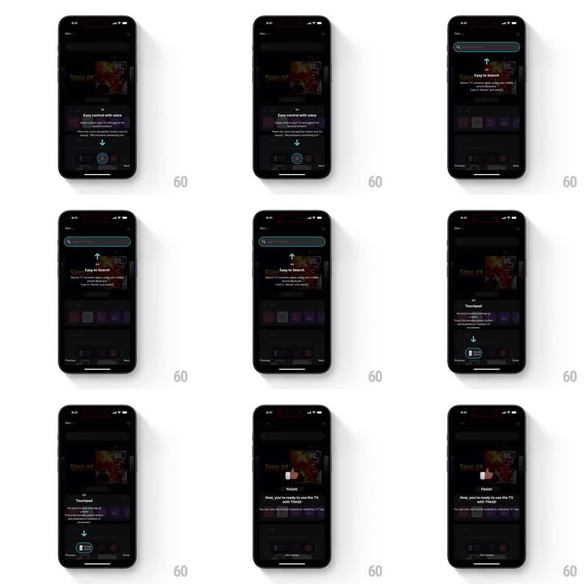

Media
Frame-by-frame

Rebuild this interaction 1:1: LG ThinQ's coachmarks - a three-step tooltip walkthrough dims the remote UI, highlights each control in turn (voice mic, search bar, touchpad) with an outlined glow, and finishes with a thumbs-up "you're ready" card.

Rebuild this interaction 1:1: LG ThinQ's coachmarks - a three-step tooltip walkthrough dims the remote UI, highlights each control in turn (voice mic, search bar, touchpad) with an outlined glow, and finishes with a thumbs-up "you're ready" card. ## Integration Integration: stack-agnostic spec - springs given as stiffness/damping, timed motions as duration + curve; map every value to your framework and animation library of choice. ## Scene Dark TV-remote app. Step 1/3: "Easy control with voice" tooltip with a down arrow pointing at the pulsing mic button. Step 2/3: "Easy to Search" tooltip with an up arrow pointing at the rounded search bar (teal outline). Step 3/3: "Touchpad" tooltip pointing at the touchpad toggle. Finish: centered thumbs-up illustration with "Finish! Now, you're ready to use the TV with ThinQ!" and a Get started button. Previous/Next controls below. ## Motion spec Pattern: stepped coachmark sequence with glowing target highlights. - Each step: the dim scrim (black ~70%) holds; the target control gets a teal rounded outline that draws itself (stroke animates over 400ms) then pulses (opacity 0.6 -> 1, 1.4s loop). - The tooltip card enters from the arrow's direction (translate 12pt + fade, spring ~300/20, 300ms); its arrow nudges toward the target in a 1s loop (translate 4pt, ease-in-out). - Step transitions: the old tooltip slides out and fades (200ms), the old outline undraws (250ms), then the new outline draws and the new tooltip enters - sequential, not simultaneous. - The step counter (1/3, 2/3, 3/3) crossfades above each tooltip. - Finish step: scrim lightens (~40%), the thumbs-up scales in (0.7 -> 1.05 -> 1, spring ~340/15) and the copy fades up (250ms). ## Calibration - Only one highlight lives at a time; the sequence is strictly ordered. - Tooltip never covers its target - it docks on the opposite side of the arrow. ## Reduced motion Tooltips and outlines fade in place (250ms); no travel or pulse loops. ## Don't miss - The mic button keeps its own idle pulse even under the scrim. - Previous returns one step with reversed motion; there is no skip until the finish card.